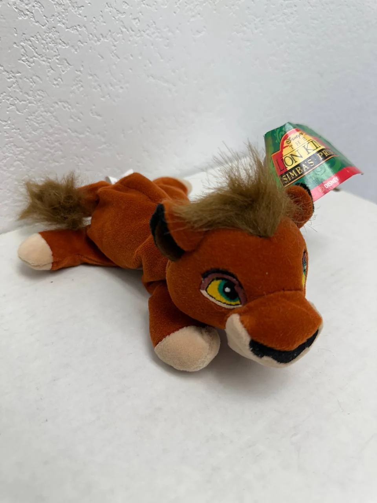
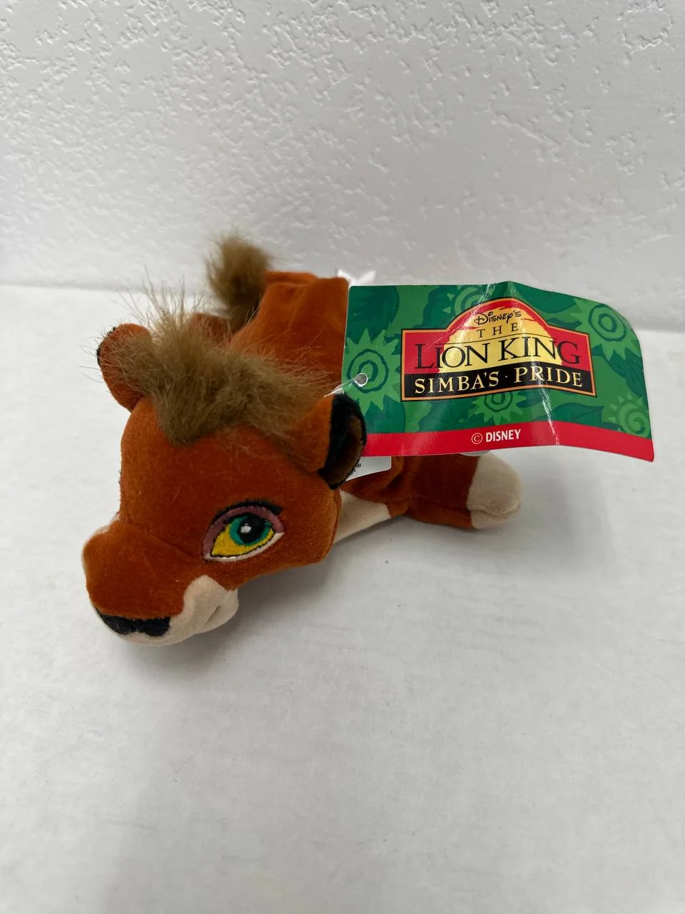

← Back to Cypress Flips


Plushie
Vintage Disney The Lion King II: Simba's Pride Kovu Cub Bean Bag Plush w/ Tag
$16.00
Website direct local pickup price — marketplace listings may be higher.
Bring home a piece of late-90s Disney nostalgia with this Kovu cub bean bag plush from The Lion King II: Simba's Pride. Kovu is one of the standout characters from the 1998 sequel, and this small plush captures him as a cub with embroidered eyes, soft brown body, tan paws, a fuzzy mane, and the Simba's Pride tag still attached. It is a great display piece for Lion King fans, Disney plush collectors, or anyone who remembers the sequel era.
Condition: Good vintage pre-owned/display condition with tag attached. Compared with a mint-condition plush, this piece shows normal age and handling wear. The plush fibers and fuzzy mane/tail look slightly tousled from storage/display, and the attached paper tag has visible bending/creasing/waviness. The embroidered eyes and facial details appear intact, and no major tears, missing pieces, or heavy stains are visible in the provided photos. Please note that only two angles are shown, so underside/backside condition is not fully documented.
Market value for tagged Kovu plushes varies depending on size, tag condition, and exact release, with comparable listings commonly appearing around the mid-teens to $25 range and some higher. At $20, this is priced as a fair, collectible, and giftable Disney plush with strong nostalgic appeal.
Condition: Good vintage pre-owned/display condition with tag attached. Compared with a mint-condition plush, this piece shows normal age and handling wear. The plush fibers and fuzzy mane/tail look slightly tousled from storage/display, and the attached paper tag has visible bending/creasing/waviness. The embroidered eyes and facial details appear intact, and no major tears, missing pieces, or heavy stains are visible in the provided photos. Please note that only two angles are shown, so underside/backside condition is not fully documented.
Market value for tagged Kovu plushes varies depending on size, tag condition, and exact release, with comparable listings commonly appearing around the mid-teens to $25 range and some higher. At $20, this is priced as a fair, collectible, and giftable Disney plush with strong nostalgic appeal.
Local pickup available in Cypress, CA.